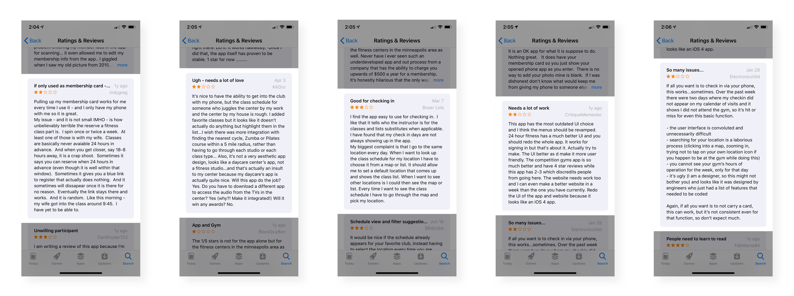
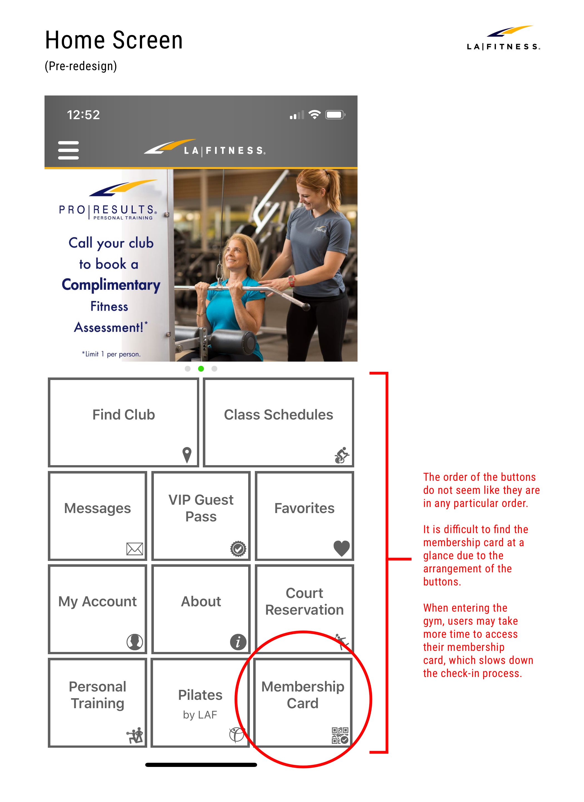
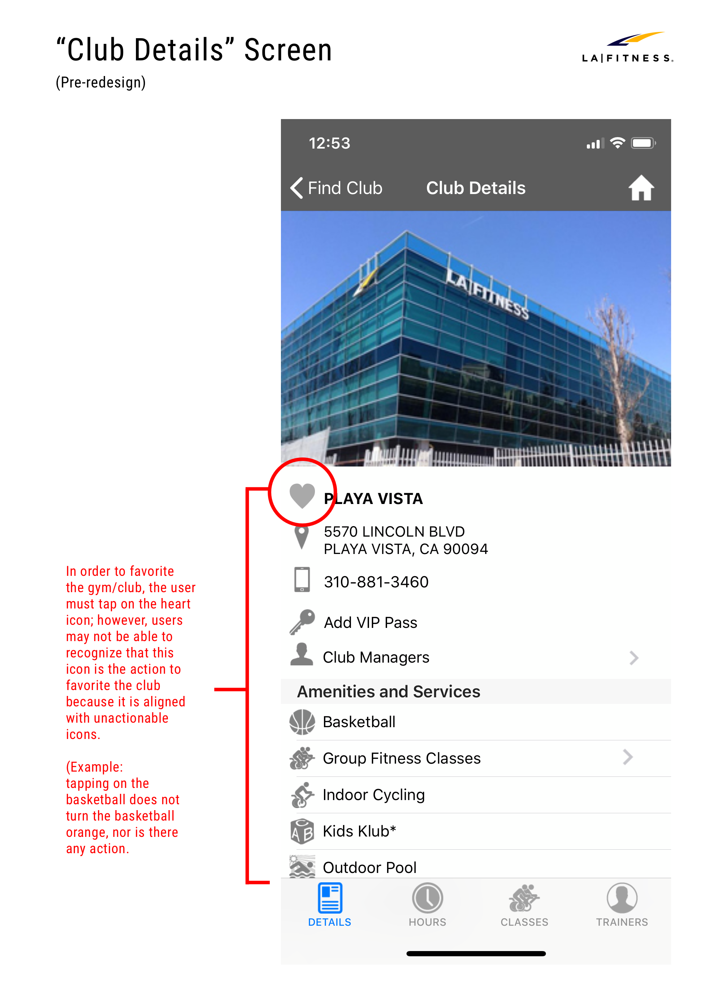
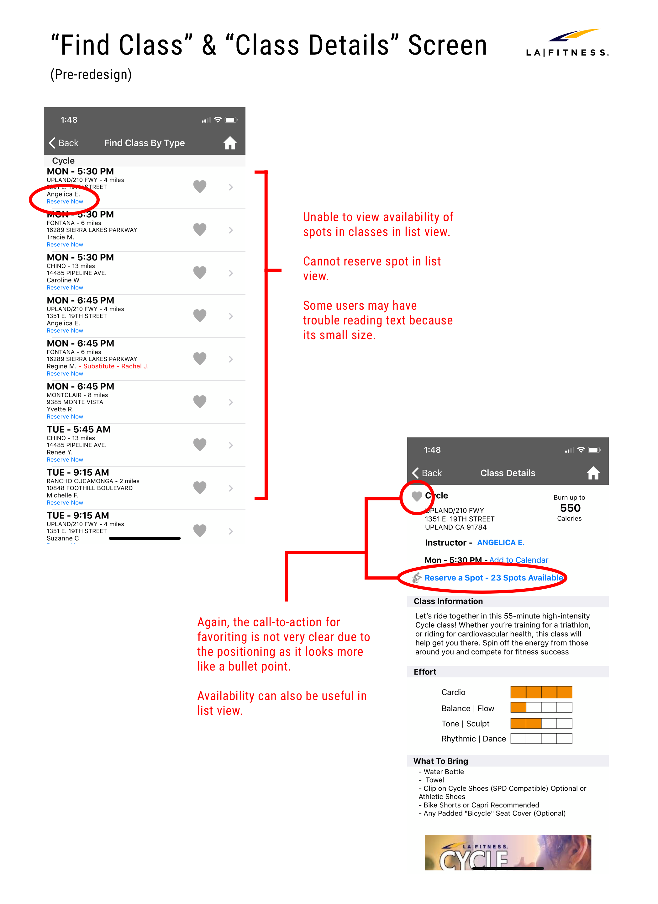

User Research.
App Store Reviews.
First, I went to the App Store to see the reviews of the current LA Fitness app too get a better sense of how people are feeling about their experience with it.

With an overall rating of 2.3 out of 5 with 1,259 reviews, the app seems to have a long way to go in terms of pleasing its users.
"My issue - and it is not small IMHO - is how unbelievably terrible the reserve a fitness class part is. Classes are basically never available 24 hours in advance. Somtimes it gives you a blue link to register that actually does nothing."
-indygreg
"I added favorite classes but it looks like it doesn't actually do anything but highlight them in the list."
- KKDro
"My biggest complaint is that I go to the same location every day. WHen I want to look up the class schedule for my location I have to choose it from a map or list. It should allow me to set a default location that comes up and shows the
class
list."
- Boxer Lola
"This app has the most outdated UI choice and I think the menus should be revamped."
- CritiqueMemester
"The user interface is convoluted and unnecessarily difficult. Searching for your location is a laborious process. It's ugly."
- Electronicchild
The main issues from current users appear to be around reserving and favoriting classes, not being able to set default location, search funcationality, and the "convoluted" user interface.
With this feedback in mind, I decided to also conduct a usability test to confirm and uncover the pain points that exist in the app.
Usability Test.
The usability tests were conducted on participants who had never used the app before, and I had them do simple tasks:
-
Access membership card
-
Find local gym
-
View details for upcoming cycling class
-
Add local gym and cycling class to favorites
-
Reserve spot for cycling class
-
Cancel reservation for cycling class
Results.
Below are the main takeaways from the research:
- 6 / 10 did not locate the membership card icon on the homepage at a glance
- 5 / 10 had difficulty adding a gym and/or class to their favorites
- 4 / 10 could not figure out how to cancel reservation starting from the home screen
- 3 / 10 did not spot the reserve button at a glance
The Process.
After reviewing each participant’s experience with the app, I proceeded by identifying the frustrations, and creating the user flow when it came to searching, reserving, and favoriting a class. This helped me get a better sense of where along
the flow there were problems and if there was any relationship between them.
User Pain Points.
As the research results inferred, there were several issues involving the following:
Accessing Membership Card:
Users were unable to find the membership card icon at a glance on the home screen of the app. The order of the bottons do not seem like they are in any particular
order. It is difficult to find the membership card at a glance due to the arrangement of the buttons. When entering the gym, users may take more time to access their membership card, which slows down the check-in process.

Favoriting Gyms and Classes:
There was difficulty in figuring out how to add a gym and/or class to their favorites as the call-to-action is currently unclear. In order to favorite the gym/club, the user must tap on the heart icon; hoever, the users may not be able to
recognize that this icon is the action to favorite the club because it is aligned with unactionable icons.

Making Reservations:
Some users tapped on the “Reserve Now” text in the class list believing that it would sign them up for the class; however, they realized that they had to officially reserve a spot in the Class Details section. The users are unable to view
availability of open spots, and reserve a spot in the list view.

Canceling Reservations:
Some users had trouble finding the class reservation page from the homepage, which made it difficult for them to cancel reservations. After the user reserves a spot for class, the reservation icon appears on the top right of the home
screen. Although the app highlights the new icon after reserving a spot, the message is only shown once. Thus, users may not be aware of the change, which makes it difficult for them to cancel their spot.
User Flow.
Before.
I mapped out the current user flow to pinpoint the issues from searching for classes and gyms to attending the reserved session. This clarifies where the issues occur during the process.
After.
After noting the pain points, I redesigned the user flow with solutions along with the introduction of saving a primary gym location for make the process simpler for the next use.

Solutions.
Accessing Membership Card.
Users were unable to find the membership card icon at a glance on the home screen of the app. The order of the bottons do not seem like they are in any particular
order. It is difficult to find the membership card at a glance due to the arrangement of the buttons. When entering the gym, users may take more time to access their membership card, which slows down the check-in process.
Favoriting Gyms and Classes.
There was difficulty in figuring out how to add a gym and/or class to their favorites as the call-to-action is currently unclear. In order to favorite the gym/club, the user must tap on the heart icon; hoever, the users may not be able
to
recognize that this icon is the action to favorite the club because it is aligned with unactionable icons.
Marking Reservations.
Some users tapped on the “Reserve Now” text in the class list believing that it would sign them up for the class; however, they realized that they had to officially reserve a spot in the Class Details section. The users are unable to
view
availability of open spots, and reserve a spot in the list view.
Canceling Reservations.
Some users had trouble finding the class reservation page from the homepage, which made it difficult for them to cancel reservations. After the user reserves a spot for class, the reservation icon appears on the top right of the home
screen. Although the app highlights the new icon after reserving a spot, the message is only shown once. Thus, users may not be aware of the change, which makes it difficult for them to cancel their spot.